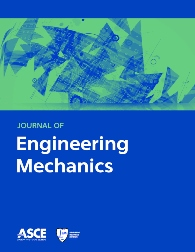

College of Science and Technology
ཚན་རིག་དང་འཕྲུལ་རིག་མཐོ་རིམ་སློབ་གྲྭ
ROYAL UNIVERSITY OF BHUTAN

Journal of Engineering Mechanics is a peer-reviewed scientific journal published monthly by the American Society of Civil Engineers (ASCE) and sponsored by the Engineering Mechanics Institute (EMI).
Importance of Studying Engineering Mechanics:
Engineering mechanics is important because it helps us understand how forces affect objects at rest and in motion. It provides the
basic knowledge needed to design safe and strong buildings, bridges, roads, and machines. It helps engineers calculate forces, balance
structures, and prevent failures. It is also useful for solving engineering problems and developing practical skills in fields such as
civil, mechanical, and structural engineering.
Impact of Engineering Mechanics:
Engineering mechanics has a major impact on the development of safe and strong structures, such as buildings, bridges, and roads.
It helps engineers understand forces, improve machine performance, reduce accidents, and prevent structural failures. It also supports
technological advancement and makes construction more reliable and efficient.
Engineering mechanics is important because it helps us understand how forces affect objects at rest and in motion. It provides the basic knowledge needed to design safe and strong buildings, bridges, roads, and machines. It helps engineers calculate forces, balance structures, and prevent failures. It is also useful for solving engineering problems and developing practical skills in fields such as civil, mechanical, and structural engineering.
Engineering mechanics has a major impact on the development of safe and strong structures, such as buildings, bridges, and roads. It helps engineers understand forces, improve machine performance, reduce accidents, and prevent structural failures. It also supports technological advancement and makes construction more reliable and efficient.
LIBRARY HOURS:
Monday-friday:8:00am-9:00pm